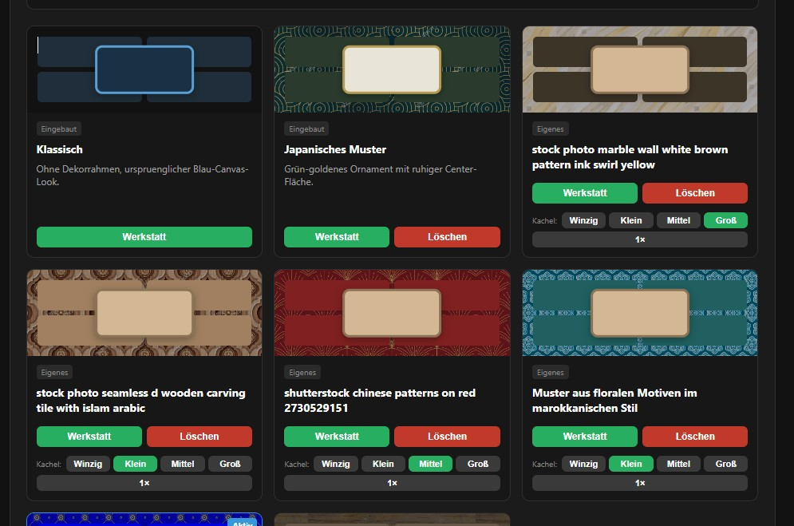
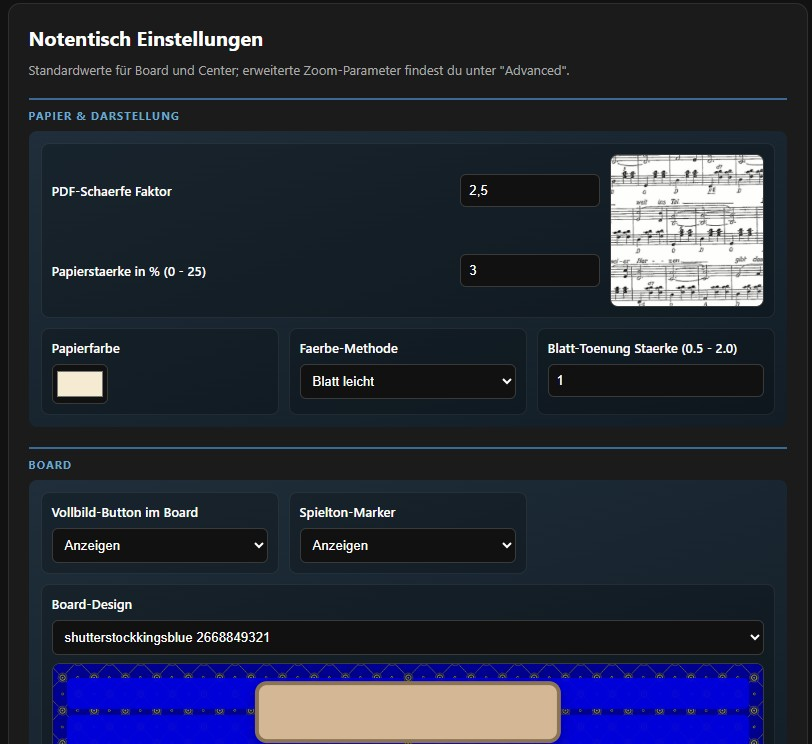

Ordnung statt Notenchaos – übersichtlich, flexibel und perfekt für deinen Übungsalltag.
Alles im Blick
Notentisch bringt Ordnung in dein Notenchaos: Statt vieler einzelner Blätter auf dem Pult verwaltest du deine Noten bequem auf dem Bildschirm. So hast du beim Üben alles im Blick, findest Stücke schneller und kannst dich voll auf die Musik konzentrieren.
Egal ob du übst, probst oder auftrittst – Notentisch sorgt dafür, dass du deine Musik immer vollständig im Blick hast. Kein Suchen, kein Blättern, kein Chaos. Nur deine Noten, perfekt
präsentiert.
Dein Übungsverlauf
Dein Übungsfortschritt wird durch vier klar definierte Stapel sichtbar: Zurückgestellt, Wiederholen, Geübt und Gelernt. Jedes Blatt wandert automatisch oder manuell in den passenden Bereich. So entsteht ein intuitiver Übungsverlauf, der dir zeigt, welche Stücke du bereits sicher beherrschst und welche du noch vertiefen möchtest.
Anpassbare Darstellung

Du kannst die Anzahl der Stapel reduzieren, das Layout verbreitern oder die Darstellung für große Notenblätter optimieren.
Auch den Hintergrund kannst du dir individuell gestalten. Dazu kannst du Muster verwenden, die du dir zuvor aus Websites heruntergeladen hast.
Alle anpassungen werden automatisch gespeichert, sodass du jederzeit genau dort weitermachst, wo du aufgehört hast.
Intelligente Suche
Die Suche ist so flexibel wie du: Gib einen Titel ein, suche ihn aus der Blättersnsicht, oder spiele die ersten Takte eines Stücks – Notentisch erkennt die Melodie und öffnet das passende Blatt automatisch. Ideal für große Sammlungen, spontane Sessions oder wenn du ein Stück im Kopf hast, aber den Titel nicht mehr weißt.
Detailed Description
📄 Notentisch – dein digitaler Notenständer
Notentisch bringt Ordnung in dein Notenchaos: Statt vieler einzelner Blätter auf dem Pult verwaltest du deine Noten bequem auf dem Bildschirm. So hast du beim Üben alles im Blick, findest Stücke schneller und kannst dich voll auf die Musik konzentrieren.
🖥️Notentisch zeigt auf dem Bildschirm ein großes zentrales Notenfeld, und links und rechts kleinere Fenster für die vier Notenstapel. Die Stapel sind benannt nach Arbeitszuständen die deinem Übungsverlauf entsprechen. Mit den Buttons der unteren Zeile können die Funktionen gesteuert werden.
📚 Du hast deine Notenblätter gescannt, die Dateinamen den Titeln angepasst und als Notenliste gespeichert. Damit kannst du sofort beginnen. Notentisch übernimmt die Blätter und ordnet ihnen zunächst den ersten Bearbeitungsstand zu: den Stapel zurückgelegt. Die weiteren Stapel heißen wiederholen, geübt und gelernt.
🔄 Durch Verschieben der Blätter zwischen den Stapeln wird automatisch der neue Arbeitsstand zugeordnet – ganz nach deinem Übungsverlauf.
🎼 Die Darstellung im Bildschirm kannst du vielfältig an deine Spielgewohnheiten anpassen: zum Beispiel breiter für dreiseitige Notenblätter oder mit weniger Stapeln, aber größerem Notenfeld. Auch den Hintergrund kannst du individuell gestalten.
🔍 Neben dem Verschieben aus den Stapeln kannst du deine Noten auch über Textsuche, Bildsuche oder durch Vorspielen der ersten Takte aufrufen. Dazu musst du die Stücke einmal einspielen.
✏️ Wenn ein Blatt im zentralen Notenfeld liegt, kannst du es weiter formatieren – etwa durch Positionierung oder Vergrößerung. Notentisch merkt sich diese Einstellungen und stellt sie beim nächsten Öffnen des Blattes automatisch wieder her.
🗂️ Arbeitsstand, Format, Erkennungstonsequenz und Zeitpunkt der Ablage werden dem Notentitel in der Notenliste zugeordnet und gespeichert. Damit kannst du die Daten in einer externen Notensammlung weiterverwenden. Ich habe dazu eine MS‑Access‑Datei entworfen.
🗃️ Das Notenverzeichnis in MS Access arbeitet zusammen mit deinem Notenverzeichnis. Du kannst die aktuelle Notenliste aus Notentisch per Knopfdruck übernehmen und den dort gespeicherten Titeln zuordnen.
🔁 Das funktioniert natürlich auch umgekehrt: Erstelle zuerst eine Notenliste in Access und exportiere sie per Knopfdruck in das Notentisch‑Verzeichnis.
📝 In Access kannst du beliebig viele weitere Bearbeitungsstände hinzufügen, z. B. Neuzugang oder erst gespielt. Du kannst die Notenliste komplett neu erstellen, Zuordnungen zu Heften vornehmen oder Potpourris zusammenstellen.
Ein sehr nützliche Funktion ist das Umbenennen eines Notenscans: Nach dem Einscannen vergeben Scanner oft kryptische Dateinamen. Mit einer speziellen Funktion kannst du diese elegant ändern.
🔗 Schiebe dazu den Scan in deinen Notenordner, übertrage den Hyperlink anschließend nach Access, und ein Knopfdruck benennt den Scan‑Titel in deinen eigenen Notentitel um.
📥 Ein mit anderen Tools erstelltes Notenverzeichnis kannst du sehr wahrscheinlich ebenfalls übernehmen – mithilfe des Export/Import‑Mechanismus in Access.
Galerie

Download & Installation
Lade die aktuelle Version von Notentisch herunter und starte die Anwendung direkt aus dem entpackten Ordner.